2.흡착
2.1 개요
경계면에 특정한 물질이 축적되는 현상을 흡착(adsorption)이라고 부른다. 고체와 기체가 평형을 이룬 상태에서 기체상 평균 농도에 비해 고체 표면에서 기체 성분의 농도가 더 높으면 고체 표면에 기체 성분이 흡착되었다고 말한다.
고체나 액체 표면에 기체 성분이 흡착될 수 있고, 액체 표면에 다른 액체나 기체 성분이 흡착될 수 있으나 불균일 촉매반응에서는 촉매는 고체이고 반응물은 기체나 액체이어서, 이 장에서는 고체 표면에 대한 기체의 흡착을 주로 다룬다. 흡착된 물질이 경계면에서만 농축되지 않고 고체내로 투과 확산되어 계 전체의 농도가 증가되는 경우는 흡착이 아닌 흡수라고 부른다. 흡착과 흡수는 물질이 겉에만 붙는가 아닌가로 구별하지만, 흡착과 흡수가 동시에 진행되거나 경계면이 애매하여 두 현상을 명확하게 구별하기 어려울 때는 합하여 수착(sorption)이라고 부른다.
경계면에서 흡착된 물질의 농도가 감소하면 탈착된다고 한다. 기체분자가 표면에서 일정 거리에 농축되는 현상이 흡착이고, 흡착된 기체분자가 표면으로부터 멀어지는 현상이 탈착이다. 기체분자의 운동에너지와 흡착될 때 방출되는 안정화에너지의 크기에 따라 흡착과 탈착의 진행방향이 정해지며, 평형 흡착량도 이 에너지값의 크기에 따라 흡착과 탈착의 진행방향이 정해지며(즉 더 안정해지는 방향으로 진행된다.) 평형 흡착량도 이 에너지값의 크기 차이에 의해 결정된다. 계의 온도가 높아서 기체 분자의 운동에너지가 크면 탈착 가능성은 높아지나, 탈착 여부는 기체분자와 표면의 상호작용 세기에 따라 달라진다.흡착 세기가 강하면 상당히 높은 온도에서도 많이 흡착되지만, 약하게 흡착된 분자는 온도가 높아지면 바로 탈착한다.
고체 표면에 기체가 응축되어 액화되어도 표면에 특정 물질의 농도가 높아지지만, 이 현상은 흡착이라고 부르지 않는다.
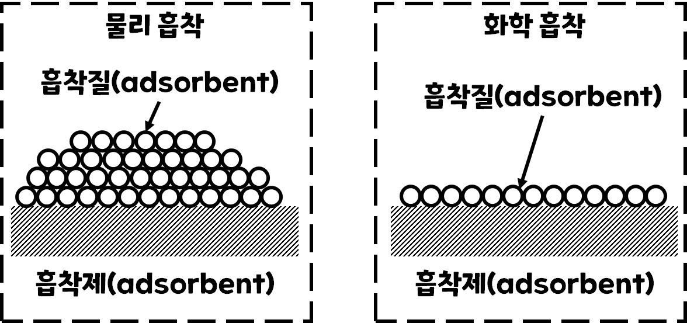
고체 표면에 기체가 흡착되면 표면에 흡착층이 형성되고, 그 바깥쪽에는 기체가 있다. 그림 2-1에 보인 것처럼 흡착층이 고체 표면을 완전히 덮고 있으나 표면에서 거리가 멀어질 수록 흡착된 물질의 양이 적어진다.이와 달리 흡착층을 이루지 않고 고체 표면의 특정한 흡착점에만 선택적으로 흡착되기도 한다. 흡착된 이웃분자와 떨어져있으며 한 흡착점에 한 분자씩 흡착된다.(그림에서는 분자가 붙어있긴 하다..) 흡착된 분자가 서로 모여 표면을 덮고 있으면, 병진운동( 물체가 상하좌우로 평행하게 이동하는 운동) 의 자유도가 하나 없어진 점을 빼고는 2차원 액체와 비슷해진다. 그러나 흡착이 매우 강하면 흡착된 분자의 구조나 화학적 성질이 기체분자와 크게 달라질 수 있다.
흡착되면서 분자의 특정 결합이 약해지거나 또는 분자 일부가 떨어져 흡착되면 흡착된 분자가 불안정해져서 반응 가능성이 높다. 이 상태를 활성화되었다고 하며, 이로 인해 특정 반응이 쉽게 진행될 수 있다. 이렇게 흡착 후 활성화되어 촉매반응이 빨라지는 현상을 촉매작용이라고 부른다. 흡착되어 활성화로 인해 활성화에너지가 낮은 반응경로가 가능해지기 때문에 촉매작용이 나타난다.반응물이 촉매 활성점에 흡착되어 촉매반응이 시작되기 때문에, 촉매작용을 이해하려면 먼저 흡착 현상을 이해하여야 한다. 나아가 흡착상태는 생성물의 선택성을, 흡착 세기는 촉매반응의 속도를 결정하는 데 중요하므로 반응물의 흡착 가능성에서 일차적으로 촉매의 활성물질을 선정한다.
이 장에서는 촉매 현상을 이해하는 데 도움이 될 수 있도록 흡착 과정에서 에너지 변화, 흡착의 종류와 성질, 흡착 현상을 정량적으로 나타내는 방법, 촉매작용과 직접 관계되는 화학흡착을 설명한다. 여기서는 불균일 촉매를 주로 다루고 있으므로, 흡착 현상도 기체가 고체 표면에 흡착되는 경우를 예로 들어 기술한다.
2.2: 흡착에너지와 흡착 상태
2.2.1: 흡착에너지
고체 표면의 원자배열이나 에너지 상태는 내부(bulk)랑은 다르다. 표면에 있는 원자는 외부로 향한 방향에 다른 원자가 없기 때문에, 내부 원자와 달리 결합력이 불균형된(unbalanced) 상태에 있다. 이로 인해 표면 원자는 내부원자보다 배위 수가 적고, 에너지가 높다. 따라서 표면원자는 배위되지 않은 위치에 다른 원자나 분자를 받아들여 에너지를 낮추려고 한다. 표면으로부터 일정 거리에 다른 원자나 분자가 존재하여 계의 에너지가 낮아질 수 있으면 흡착이 일어난다.
고체 표면에 기체 분자가 자발적으로 흡착하려면 흡착으로 인해 계의 깁스E가 낮아져야 한다. 기체 분자가 나누어지지 않고 그대로 흡착되면 기체분자에 비해 병진운동의 자유도가 줄었으므로 엔트로피가 줄어든다. 이처럼 흡착과정에서는 엔트로피가 줄어들기 때문에, 깁스에너지의 변화량이 음이 되려면 흡착 엔탈피의 변화량은 반드시 음의 값이어야 한다.
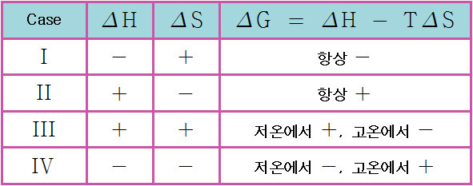
케이스 4번에 해당한다고 보면 된다. 이때 T는 흡착이 일어나는 온도이며 △H는 엔탈피 변화량, △S는 엔트로피 변화량을 나타내며 △G는 기체 상태와 흡착 상태의 깁스에너지 변화량을 의미한다.
기체 분자가 나뉘지 않고 그대로 흡착되면 열이 발생한다. 그러나 수소분자가 두 개의 수소원자로 해리되어 흡착되는 해리 흡착에서는 한 분자가 두 원자로 나뉘는 과정에서 엔트로피가 증가하므로, 이론상으로는 흡열흡착도 가능하다. 그러나 대부분의 흡착에서는 엔트로피가 감소하기 때문에 발열반응이 된다.
흡착을 일으키는 힘은 반데르발스(반데왈스) 힘이라고 부르는 분자간 응집력과, 흡착제와 흡착된 물질 사이에 이루어진 화학결합에 기인한 화학결합력 두 가지가 있다. 반데왈스 힘에 의한 흡착은 흡착된 분자나 흡착제가 본래 가지고 있거나 흡착 도중 다른 물질에 의해 유도되어 생성된 쌍극자나 사극자 사이의 인력이나 분산력에 의해 일어난다. 분자 구조에 변화가 없고, 흡착 과정에서 전자 이동이 없으므로 이를 물리흡착이라고 부른다. 반면 표면과 흡착된 분자 사이에 전자가 이동되어 결합이 생기는 화학흡착에서는, 결합이 흡착의 원동력이 된다.
물리 흡착현상을 설명하기 위해 기체분자와 고체 표면간 거리에 따른 포텐셜에너지의 변화를 그림 2-2에 나타내었다.
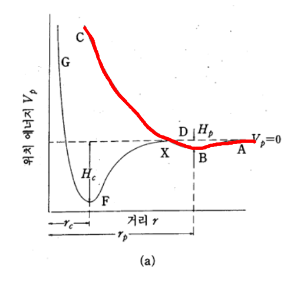
빨간 펜으로 그려진 부분이 물리흡착을 나타낸다. 기체 분자가 고체 표면에 아주 멀리 있을 때는 상호작용이 없기에 포텐셜에너지가 0이다. 그러나 점차 가까워지면 인력이 발생하여 포텐셜에너지가 작아진다. 포텐셜에너지가 작아지면 안정해지므로, 포텐셜에너지가 가장 낮아지는 거리에 기체분자가 많이 모인다. 그러나 물리흡착에서는 전자가 이동하지 않아 분자구조나 에너지 상태가 변하지 않으므로 에너지 변화가 작다. 또한 너무 가까워지면 반발력이 일어나 오히려 포텐셜에너지가 커진다. 기체분자가 B위치에 있을 때 가장 안정하므로 이 거리에서 물리 흡착이 일어난다.
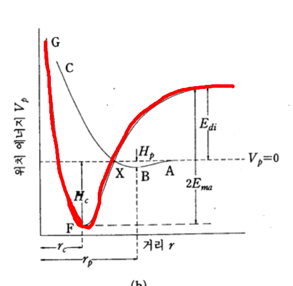
이번에는 화학흡착 과정에서 거리에 따른 계의 퍼텐셜에너지 변화를 살펴보자. F위치에 흡착되는 기체분자와 표면 사이에는 화학결합이 형성된다. 화학흡착은 표면에서 진행되는 화학반응이므로, 흡착될 분자는 활성화에너지를 받아 활성화에너지 고개를 넘어 활성화되어야 한다. F위치에서 화학결합이 생성되면서 방출되는 에너지를 흡착열이라고 부른다. 흡착열만큼 에너지를 받아야 탈착될 수 있으므로 흡착열이 크면 쉽게 탈착하지 못해 흡착 상태가 안정하며 이를 강한 흡착이라고 부른다. 반면, 흡착열이 작으면 온도가 조금만 높아져도 바로 탈착되므로 흡착이 약하다고 한다.
2.2.2: 물리 흡착과 화학흡착
수소가 구리 표면에 흡착되는 과정에서 구리 표면과 수소분자 또는 원자 사이 거리에 따른 포텐셜에너지의 변화를 그림 2-4( 사실 위와 그림이 똑같다)에 나타내었다.

검은색 곡선 ABC는 물리흡착 과정을 나타낸다. 수소가 분자 상태로 먼 거리에 흡착되고, 흡착과정에서 방출되는 에너지는 작다. 빨간 곡선은 화학흡착을 나타낸다. 수소분자가 활성화 에너지를 받아 해리된 수소 원자가 표면에 흡착되어 Cu-H 화합물을 형성하므로 새로운 결합이 생성되고, 이로 인해 표면에 가깝게 흡착되며 방출하는 에너지도 크다.
물리흡착과 화학흡착은 흡착을 일으키는 원동력이 반데왈스 힘과 화학결합으로 서로 다르기 때문에, 흡착될 때 발생하는 흡착열뿐 아니라 흡착속도, 흡착량, 탈착 거동 등이 다르다.
흡착과정에서 발생되는 안정화에너지는 흡착열로 방출된다. 흡착열은 흡착되어 안정화된 정도, 즉 흡착 세기에 따라 달라지므로 흡착 종류에 따라 차이가 크다. 물리 흡착의 흡착열은 대략 8~20kJ/mol 정도로 액화열과 비슷하다. 쌍극자가 있는 물질이 극성 표면에 물리흡착될 때 흡착열은 이보다 크지만, 화학흡착에 비해서는 대체로 작다. 화학흡착에서는 흡착열이 200~800kJ/mol 정도로 상당히 크다.
흡착되는 분자와 고체 표면의 상호작용 형태와 세기에 따라 흡착열이 결정된다. 아르곤이나 헬륨처럼 극성이 없는 물질이 극성이 없는 고체 표면에 물리흡착될 때, 흡착열은 액화열과 비슷하다. 그러나 물이나 암모니아처럼 쌍극자모멘트가 큰 물질이 극성 표면에 흡착되면 정전기적 인력으로 강하게 흡착되고, 따라서 흡착열도 크다. 화학흡착에서도 생성된 화학결합이 약하면 흡착열이 작을 수도 있으나, 대체로 화학결합이 강하기 때문에 생성되는 흡착열이 매우 크다. 이처럼 흡착열은 흡착 형태를 개략적으로 구별하는 근거로 유용하지만, 흡착열만으로 흡착 형태를 판정하는 것은 매우 위험하다.
물리흡착은 기체의 액화 현상과 비슷하여 활성화에너지가 거의 없으므로, 흡착속도가 빠르고 평형이 이루어지는 데 걸리는 시간이 짧다. 이에 반하여 화학흡착은 화학결합이 형성되는 화학반응이어서 활성화과정을 거쳐 진행되므로, 활성화에너지가 크면 흡착속도가 아주 느릴 수도 있다. 그러나 흡착열이 아주 크면 흡착열로 인해 계의 온도가 바로 높아져 흡착이 빠르게 진행되기도 한다. 만일 흡착제의 세공이 아주 가늘어서 기체분자의 확산이 느리면 물질전달이 지연되어 물리흡착도 아주 느리게 진행된다.따라서 물리흡착은 빠르고, 화학흡착은 느리다는 설명이 이론적으로 틀리지는 않지만, 계에 따라 다르게 나타날 수도 있다.
흡착이 일어나는 온도도 흡착 종류에 따라 다르다. 물리 흡착에서는 흡착으로 안정화되는 에너지가 작아 끓는 점보다 조금 높은 온도에서만 흡착이 가능하다. 온도가 더 높아지면 분자의 운동에너지가 많아져 바로 탈착된다. 그러나 화학흡착에서는 분자의 운동에너지가 높아야 활성화에너지 고개를 넘을 수 있기 때문에 끓는점보다도 훨씬 높은 온도에서 흡착이 일어난다. 또 흡착세기가 강하기 때문에 높은 온도에서 탈착되는 양은 물리흡착에 비해 매우 적다. 산소의 끓는 점은 90K로 매우 낮기 때문에, 산소는 상온에서 물리흡착되지 않는다. 그러나 산소는 이보다 훨씬 높은 450K근처에서도 산화아연에 화학흡착된다. 따라서 끓는 점보다 훨씬 높은 온도에서 일어나는 흡착은 화학흡착이라고 봐도 무방하다.
물리흡착에서는 기체분자가 고체 표면과 물리적 인력이 있어 흡착되므로, 분자의 종류나 성질보다는 온도와 압력 등 물리적 인자가 흡착 여부를 결정한다. 이에 비하여 화학흡착에서는 기체 분자와 고체 표면이 전자를 서로 주고받거나 공유할 수 있어야 화학결합을 이룰 수 있어, 특정한 물질 사이에서만 화학흡착이 일어난다. 즉, 화학결합이 형성될 수 있도록 전자를 주려고 하는 표면이면 전자를 받을 수 있는 기체가, 반대로 전자를 받으려 하는 표면이면 전자를 줄 수 있는 기체가 이온결합을 이루며 화학흡착될 수 있다. 전자를 서로 제공하여 공유하거나, 또는 기체나 표면 한 쪽에서 전자쌍을 모두 제공하거나, 아니면 화학결합이 생성될 수 있도록 전자가 이동하여 하전이 반대가 되어야 화학흡착이 가능해진다. 물리흡착에서는 물리적 조건이 적합하면 기체나 표면 종류에 관계없이 흡착이 일어나지만, 화학흡착은 특정 기체와 특정 표면 사이 즉, 선택적인 쌍 사이에서만 가능하다.
화학흡착에서는 전자를 주고 받아야하기 때문에 흡착은 한 층으로 제한된다. 이에 반해 물리흡착은 표면뿐 아니라 흡착된 분자 위에도 다시 흡착될 수 있어 흡착층이 두꺼워질 수 있다. 압력과 온도에 따라 진행 정도가 다르긴 하지만 물리흡착에서는 다분자층 흡착이 가능하여 단분자층 흡착만 가능한 화학흡착보다 흡착량이 훨씬 많을 수 있다.
흡착 종류에 따라 탈착 거동도 다르다. 물리흡착된 물질은 계의 온도가 높아지면 쉽게 탈착된다. 이는 화학흡착도 마찬가지이긴 하나 강한 흡착의 경우 온도가 높아져도 탈착량은 적다. 또 물리흡착되었던 물질은 흡착될 때와 같은 물질로 탈착되지만, 화학흡착된 물질은 흡착된 물질과 다른 물질로 탈착되기도 한다. 활성탄에 화학흡착된 산소를 온도를 높여 탈착시키면, 대부분 산소분자로 탈착되지만 일부는 일산화탄소나 이산화탄소로 탈착된다. 흡착된 산소와 탄소의 결합이 강하여, 탈착될 때 탄소나 흡착된 산소의 결합 대신 탄소와 이웃 탄소의 결합이 끊어지기 때문이다. 이러한 거동은 화학흡착에서만 발생한다.
기체의 압력이 높거나 흡착온도가 끓는 점에 가까우면 물리흡착과 화학흡착이 동시에 일어나기도 한다. 두 종류의 흡착이 동시에 일어날 수 있는 조건에서는, 흡착속도나 흡착량으로 흡착 종류를 구별할 수 없다.
화학흡착은 촉매 작용을 가능하게 하는 기본적인 요소이기 때문에 화학흡착의 상태와 세기는 촉매작용을 이해하거나 추정하는 데 반드시 필요하다. 반응물의 어느 관능기가 흡착되는지 또 어느 구성 부분이 떨어져 흡착되는가에 따라 촉매 반응의 경로가 달라진다.
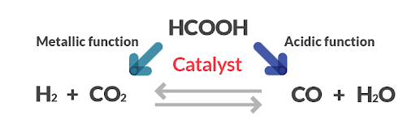
그림 2-5에 보인 개미산의 분해반응에서 생성물로 수소와 이산화탄소가 얻어질 것인지, 또는 물과 일산화탄소가 얻어질 것인지 여부는 화학흡착 상태에 따라 달라진다. 니켈 촉매에는 수소가 원자 상태로 화학흡착되며 이들이 모여 수소분자가 생성된다. 반면 산점이 있는 실리카-알루미나 촉매에는 개미산이 극성 물질인H+와 OH-로 해리흡착되므로 이들이 결합된 물이 생성된다. 생성된 수소나 물이 촉매에 너무 강하게 흡착되면, 활성점이 차폐되어 더 이상 흡착점으로서 기능을 발휘하지 못하므로 촉매작용이 없어진다. 이처럼 화학흡착의 상태와 세기는 촉매작용의 원인, 반응경로의 결정, 활성점의 재생 등 촉매의 가능성과 한계를 결정한다. 반응물이 화학흡착될 수 있어야 촉매작용이 나타나기 때문에, 촉매작용을 화학흡착과 연관지어 설명하는 것은 지극히 당연하다.
물리흡착은 표면의 구성원소나 화학적 상태보다 표면의 물리적 구조와 흡착조건에 의해 결정되기 때문에, 고체의 표면적을 측정하는 데 이용된다. 물질에 따른 선택성이 없어서, 온도와 압력 등 물리적 조건만 맞추어 주면 어떠한 고체의 표면에도 물리흡착은 일어난다. 이러한 성질을 이용하여 일반화된 측정방법을 정립할 수 있다.
이와 달리 화학흡착은 표면의 구성 원소에 따라, 또는 표면에서 원자의 배열방법에 따라 화학흡착의 가능성이 달라지므로, 표면의 화학적 성질과 특정한 물질의 분산 상태를 조사하는 데 이용된다. 수소나 일산화탄소는 금속 표면에 선택적으로 화학흡착되므로, 금속이 담지된 촉매에서는 이들의 흡착량으로부터 금속의 분산 상태를 유추할 수 있다. 흡착 상태가 같아야한다는 전제가 있어야 하지만, 수소 흡착으로 금속의 분산도를 측정하는 일은 금속 촉매의 특성 조사에 흔히 사용되는 방법이다. 이는 추후 6장에서 설명할 예정이다.
흡착을 이용하여 촉매의 물리화학적 성질을 조사하는 방법은 촉매 표면을 직접 조사한 결과가 아니라는 점에서 한계가 있다. 이러한 제한에도 불구하고, 흡착 실험에서 얻어지는 흡착량, 흡착열, 흡착이 일어나는 온도, 흡착속도, 가역성 등은 근본적으로 고체 표면의 성질에 의해 결정되므로, 흡착실험은 촉매의 성질과 상태를 파악하는 데 아주 유용하다.
2.3 흡착등온선과 흡착 등압선
흡착 상태를 정량적으로 나타내려면 기체의 압력(또는 농도), 흡착이 일어나는 온도, 단위 흡착제당 흡착량이 필요하다. 평면에 세 변수를 한꺼번에 나타내기 어려우므로, 이 중 한 변수를 일정하게 하고 나머지 두 변수의 관계를 나타낸다. 일정 온도에서 기체 압력에 대한 흡착량을 나타내는 흡착 등온선과, 일정 압력에서 온도에 따른 흡착량을 나타내는 흡착 등압선이 있다. 흡착량을 고정하여 일정 흡착량이 얻어지는 온도와 압력관계를 나타내는 흡착 등부피선도 있으나 많이 안쓰인다.
흡착 등온선으로 흡착 상태를 정량적으로 나타내면 흡착계를 이해하기 쉽다. 기체 압력에 따라 흡착량이 증가되는 경향에서 흡착 세기와 흡착제의 흡착 성질을 유추할 수 있다. 기체 압력이 정해지면 흡착 등온선에서 표면 농도를 구할 수 있어 흡착 상태에서 진행되는 촉매반응의 속도식을 도출할 수 있다. 이 외에도 흡착등온선은 표면적이나 세공 크기 분포 등 고체 표면의 구조를 정량화하는 데 근거 자료로 활용된다. 흡착 등압선은 흡착 종류를 판단하는 데 유용하다. 흡착등압선은 흡착 종류를 판단하는 데 유용하다. 흡착 등압선의 봉우리 개수는 가능한 흡착 상태에 온도가 높아짐에 따라 흡착량이 감소되는 기울기에서 흡착 세기를 유추할 수 있다.
2.3.1:흡착 등온선의 모양
그림 2-7에 여섯 종류의 대표적인 흡착 등온선을 보였다. 기체 압력이 높아지면 흡착 가능성이 커지므로, 어느 흡착 등온선이나 원점을 지나는 양의 기울기를 갖는다. 기울기가 음인 특수한 흡착 등온선이 있다는 보고는 있으나 압력이 낮아지는데 흡착이 많아진다는 점에서 합리적이지는 않다. 흡착되는 물질의 압력 P를 이 물질의 포화 증기압 P0로 나눈 상대압력 P/P0가 1.0이 되면 액화가 시작되므로, 흡착 등온선은 이보다 낮은 압력에서만 의미가 있다. 흡착은 P=0에서 시작하므로, 흡착되는 기체의 압력을 상대압력으로 나타내면 흡착이 일어나는 모든 범위를 한 그림에 나타낼 수 있다.
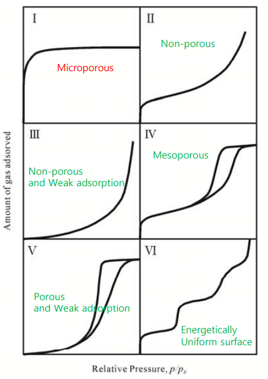
흡착 등온선은 평형 상태를 나타낸 것이므로, 흡착과 탈착 과정은 가역적이어야 한다. 기체 압력에 따라 흡착량이 정해지며, 이 상태에서는 흡착속도와 탈착속도가 같다. 따라서 흡착 과정과 탈착 과정의 흡착 등온선이 서로 같아야 한다. 이런 이유로 1 2 3형 흡착 등온선에서는 흡-탈착 과정의 흡착 등온선이 서로 일치되나, 4형과 5형 흡착 등온선에서는 서로 일치하지 않는다. 히스테리시스(hysteresis)라고 불리는 현상으로, 흡착제의 독특한 세공 구조 때문에 나타난다.
제 1형 흡착 등온선은 랭미어 형이라고 불리며 흡착이 단분자층으로 끝나는 흡착계에서 나타난다. 기체 압력이 높아지면 흡착량이 많아지나, 특정 흡착량에 이르면 기체 압력에 무관하게 흡착량이 일정해진다. 이 때 흡착량은 표면을 한 층으로 덮는 데 필요한 흡착량이라는 뜻으로 단분자층 흡착량(monolayer volume)이라고 부른다. 이런 형태의 흡착 등온선은 흡착 세기가 강하고 특정 흡착점에만 기체분자나 원자가 하나씩 흡착되는 화학흡착에서 주로 나타난다.
제올라이트나 활성탄의 아주 가는 세공은 낮은 압력에서 흡착된 분자로 채워진다. 세공이 채워질 때까지는 흡착이 계속되지만 세공이 채워진 후에는 거의 흡착되지 않기 때문에 아주 가는 세공이 많은 흡착제에서도 랭미어형 흡착 등온선이 나타난다. 이 경우 흡착량은 단분자층 흡착량이라기보다 세공을 채우는 데 필요한 흡착량이다.
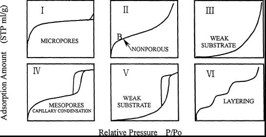
S자 형태인 제 2형 흡착 등온선은 세공이 없는(nonporous) 흡착제에서 흔히 나타난다. 기체 압력이 높아지면 흡착량이 많아지지만, 증가 정도가 압력에 따라 달라지는 흡착 등온선이다. 고체 표면이 흡착된 물질의 단분자층으로 덮이는 B지점까지는 기체 압력이 높아지면 흡착량이 많아진다. 그러나 B 이상에서는 압력이 높아져도 흡착된 분자에 다시 흡착되어야 하므로 흡착 세기가 약해 흡착량의 증가 정도가 상대적으로 작다. 그러나 포화 증기압에 가까워지면 부분적으로 액화가 시작되어 흡착량이 상당히 많아진다. B라고 표시된 변곡점에서는 단분자층으로 흡착되어있기 때문에, 이 때 흡착량으로 표면적의 어림값을 구하기도 한다.
기체 압력이 낮을 때에는 흡착량이 매우 적으나, 포화압력에 가까워지면서 흡착량이 급격히 많아지는 흡착계에서는 3형 등온선이 얻어진다. 이는 활성탄에 물이 흡착될 때처럼 흡착되는 물질이 고체 표면에 젖지(wet)않는 경우, 즉 접촉각이 90도보다 클 때 나타나는 흡착 등온선이다.
2형과 3형 흡착등온선이 얻어지는 흡착제에 세공이 있으면, 모세관 응축이 일어나서 제4, 5형 흡착등온선이 얻어진다. 기체 압력을 높여가면서 측정한 흡착 등온선과 낮춰가면서 측정한 흡착 등온선이 서로 일치되지 않는 히스테리시스는, 세공에 흡착되어 응축된 액체의 메니스커스 때문에 나타난다. 흡착될 때와 탈착될 때 메니스커스의 반지름과 모양이 다르기 때문이다. 여기에 대한 자세한 설명은 너무 방대하므로 생략한다.
2.3.2:랭미어 흡착 등온선
랭미어 흡착 등온선은 식이 간단하고 화학흡착 현상을 나타내는 데 적당하여, 촉매반응의 속도식을 도출하거나 화학흡착을 이용하여 금속의 분산도를 측정하는 데 많이 쓰인다. 랭미어 흡착 등온선은 평형상태에서는 흡착속도와 탈착속도가 같다는 사실과 아래 가정을 근거로 유도된다.
1)한 흡착점에는 한 분자만 흡착되며, 흡착된 분자는 고정되어 있다.
2)모든 흡착점의 에너지 상태는 동일하며, 흡착된 분자 사이에는 상호작용이 없다. 따라서 흡착열은 모든 흡착점에서 주위의 상태와 무관하게 일정하다.
3)흡착되는 기체는 이상기체이다.
이러한 가정은 고체 표면이 균일하며, 흡착된 분자끼리 상호작용이 없고, 흡착된 분자가 흡착점에 강하게 흡착되어 있을 때 타당하다. 이 상황에서 흡착속도는 비어있는 흡착점의 분율과 기체의 압력에 비례하고, 탈착속도는 흡착되어 있는 분율에 비례한다. 비어 있는 흡착점의 분율은 흡착량 v를 단분자층 흡착량 vm으로 나눈 값, 표면 덮임률 θ=v/vm으로 나타낼 수 있다. 평형에서는 흡착속도와 탈착속도가 같아야 하므로 식 2-4가 성립한다.
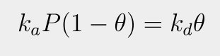
이때 ka는 흡착속도상수, kd는 탈착속도상수이다. ka/kd를 b라고 정의하여 정리하면 랭미어 흡착 등온선이라고 부르는 2-5식이 얻어진다.
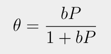
랭미어 흡착 등온선은 압력에 따라 등온선의 기울기가 달라진다. 기체의 압력이 아주 낮거나 b가 매우 작으면 흡착등온선은 bP로 간단해져서 기체 압력에 따라 흡착량이 선형적으로 증가한다. 반면 b가 크거나 압력이 매우크면 흡착값은 1에 가까워지면서 가로축에 평행해진다. 이는 단분자층으로 흡착이 다 된 상태를 의미한다. 이처럼 랭미어 흡착 등온선은 단분자층 흡착이 이루어지는 과정을 한 개의 매개변수 b만으로도 잘 나타낼 수 있어 화학흡착에서 단분자층 흡착량을 구할 때나 촉매반응의 속도식 유도에서 흡착된 반응물의 표면 농도를 구할 때 매우 유용하다.
여기서 매개변수 b는 흡착으로 인한 자유도 감소와 에너지 상태의 변화를 반영하는 평형상수로서, ka/kd이므로 b값이 크면 흡착이 잘 일어난다. 따라서 이를 흡착 평형상수 K라고 쓰기도 한다. K값이 높아지면 흡착등온선이 달라지는 경향을 다음 그림에 나타내었다.
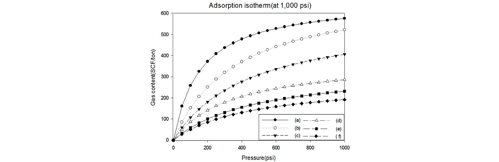
b값=k값이 작으면 흡착이 덜 일어나므로 표면덮임률 y값이 낮다. 그러나 b값이 높아지면 많이 흡착되므로 낮은 압력에서도 표면 덮임률이 높다. 이처럼 b값은 흡착세기를 나타낸다. b값은 흡착등온선에서 직접 구할 수 있으나 아래식을 이용하면 매우 쉽게 구할 수 있다.
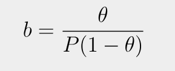
θ가 1/2일 때는 b=1/P이 되어 흡착등온선에서 바로 b값이 결정된다. 랭미어 흡착 등온선이 적용되는지 여부를 확인할 때나 흡착계의 vm과 b를 결정할 때에는 2-5식에 θ=v/vm을 넣어 모양을 바꾼 2-9식을 사용한다.
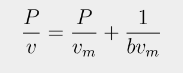
P에 대해 P/v를 그리면 직선관계가 얻어져서(다만 랭미어 흡착 등온선이 적용되는 계에서만!!) 기울기에서 vm을, 절편에서 b를 구할 수 있다.
두 종류(A,B)의 기체분자가 같은 흡착점에 경쟁흡착하는 계에 랭미어 흡착 등온선의 가정이 적용될 수 있으면, A 성분의 표면 덮임률은 2-10 식으로 나타낼 수 있다.
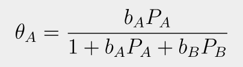
또, 한 분자가 해리흡착될 때는 표면 덮임률은 biPi를 1/2승한 다음 식으로 나타내진다.
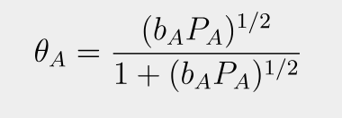
이 식은 수소의 해리흡착을 나타내는 데 적합하다.
랭미어 흡착등온선은 흡착점이 균일하고 흡착된 분자가 고정되어 있으며 흡착된 분자 사이에 상호작용이 없다는 가정하에 유도되었다. 실제로 고체 표면은 대부분 균일하지않고, 대단히 강하게 흡착되는 경우를 제외하면 흡착된 분자가 고정되어 있다고 보기도 어렵다. 또한 대부분의 경우 흡착된 분자끼리 상호작용을 무시할 수 없다. 특히 흡착량이 많은 경우 랭미어 흡착 등온선의 가정이 적용되기 어렵다.따라서 랭미어의 흡착 등온선은 물리흡착보다는 흡착세기가 크고 흡착량이 적은 화학흡착을 나타내는 데 적합하다.
보통 화학흡착은 높은 온도에서 일어나므로, 높은 온도에서 강하게 흡착하는 반응물의 표면농도는 랭미어 흡착 등온선으로 구할 수 있다. 랭미어-힌쉘우드 반응기구에서는 화학흡착에 적절한 랭미어 흡착 등온선으로 반응물의 표면 덮임률을 구해 속도식을 도출한다.
2.3.3:BET 흡착 등온선
랭미어 흡착 등온선이 발표된 지 20년 정도 지나서, 다분자층 흡착에 적용될 수 있는 흡착 등온선이 발표되었다. 이를 BET 흡착등온선이라고 부른다. 이 흡착등온선은 흡착되는 분자와 흡착제 사이에 선택성이 없는 물리흡착에 적용되며, 흡착 등온선에서 단분자층 흡착량을 결정하기 용이하여 흡착제나 촉매의 표면적을 구하는 데 많이 쓰인다.
2.3.4: 프로인드리히 흡착 등온선
2.3.5: 템킨 흡착 등온선
2.3.6: 흡착등압선
일정한 기체 압력 하에서 온도에 따른 흡착량 변화를 흡착 등압선으로 나타낸다. 흡착되는 기체 분자와 흡착점의 상호작용 세기에 따라 흡착 온도가 결정되기 때문에, 흡착 등압선에서 흡착 종류와 흡착 세기를 추정할 수 있다. 그림 2-11에 니켈 촉매에 대한 수소의 흡착 등압선을 보였다.
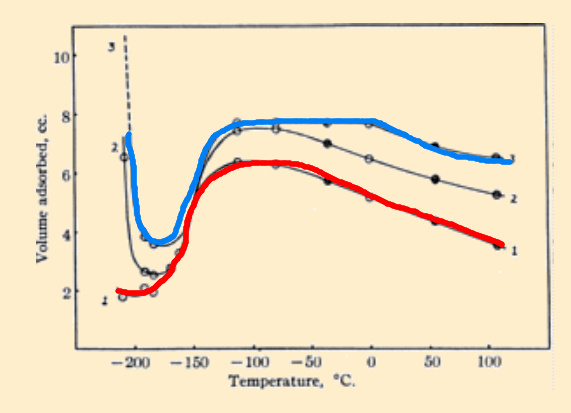
1형은 빨간색, 3형은 파란색인데, 이 둘의 차이는 압력이다. 1은 약 3.3kpa, 3은 약 78kpa이다. 흡착등압선은 수소의 끓는점인 -252.8도보다 높은 온도에서 시작된다. 온도가 더 높아지면 3형의 경우 물리흡착되던 수소가 탈착되어 흡착량이 급격히 줄어든다. 이후 -175도쯤에서 수소의 화학흡착으로 흡착량이 갑자기 많아진다. 화학흡착은 물리흡착에 비해 강하므로 끓는 점보다 훨씬 높은 온도에서 흡착되며, 또 온도가 높아져도 물리흡착과 달리 흡착량이 서서히 줄어든다. 이처럼 흡착 등압선의 모양에서 흡착 종류를 유추할 수 있고, 가능한 흡착 상태가 몇 개 인지도 알 수 있다. 그러나 상호작용의 세기가 비슷하면 흡착 종류가 달라도 탈착 봉우리가 한 개로 나타날 수 있어 주의해야 한다.
흡착등압선의 모양은 흡착되는 기체의 분압에 영향을 받는다. 보통 압력이 너무 낮아버리면 물리흡착이 일어나지 않아 화학흡착에 해당되는 흡착 등압선만 얻어진다. 높은 압력에서는 물리흡착이 포함된 흡착등온선이 얻어진다.
2.4화학흡착
고체 표면에서 촉매반응이 진행되려면 반응물이 먼저 화학흡착되어야 한다. 반응물이 모두 흡착되어 반응하기도 하고, 또는 일부만 흡착되어 반응하기도 하지만, 적어도 반응물 중 한 종류는 화학흡착되어야 촉매작용이 나타난다. 물리흡착은 촉매의 표면적을 측정하거나 세공 크기와 분포를 결정하는데 유용하지만, 촉매반응에 필수적이지는 않다. 그러나 반응물의 화학흡착은 반응물을 활성화시키는 단계로써 촉매작용의 필수 과정이며 화학흡착의 세기와 상태에 따라 촉매 활성과 반응경로가 달라진다.
화학흡착에 의해 촉매작용이 나타난다는 점은 그림 2-4에서 볼 수 있다. 수소는 구리 표면에 분자 상태로 물리흡착될 수도 있고, 원자 상태로 활성화되어 화학흡착될 수도 있다. 혹은 물리흡착 상태를 거쳐 화학흡착될 수도 있다. 수소화반응에서는 수소분자가 원자로 해리되어 반응물과 차례로 결합한다. 따라서 수소분자가 먼저 해리되어야 하므로 수소분자의 해리에너지에 상응하는 에너지가 활성화에너지로 공급되어야 한다. 원자 상태로 수소가 해리하기 위해 에너지가 많이 필요하기 때문에, 이를 충족시킬 수 있도록 반응온도를 높여주어야 한다. 온도가 높으면 엔트로피가 감소하는 수소화반응보다 엔트로피가 증가하는 분해반응이 유리해진다. 그러나 물리흡착 단계를 거치면 수소분자의 해리에너지보다 아주 낮은 포텐셜에너지 고개를 넘어 원자 상태로 화학흡착될 수 있다. 당연히 원자 상태의 수소를 생성하는데 필요한 활성화에너지도 작아진다. 이처럼 촉매를 사용하면 화학흡착 상태를 거치는 활성화에너지가 작은 새로운 반응경로가 가능해져서 반응속도가 빨라진다.
촉매반응은 화학흡착 단계를 거쳐 진행되므로, 촉매작용은 화학흡착 상태와 세기에 따라 달라진다. 화학흡착 상태는 반응경로를 결정하는 중요한 인자이다. 화학흡착 세기는 활성화 정도와 상관이 크다. 혼합물의 촉매반응에서는 흡착 세기가 강한 반응물이 활성점에 선택적으로 흡착되므로, 흡착 세기에 따라 가능한 촉매반응이 정해지기도 한다. 그러나 화학흡착이 너무 강하면 흡착된 반응물이 활성점에서 탈착되지 않아 촉매반응이 나타나지 않는다. 활성점에 아주 강하게 흡착되어 촉매 활성점을 차폐시키는 물질을 촉매독(catalyst poison)이라고 부른다. 반면, 흡착 세기가 너무 약하면 흡착량이 적어 촉매 활성이 낮다. 따라서 촉매에 대한 반응물의 흡착 세기가 너무 강하거나 또는 너무 약해도 촉매 작용이 나타나지 않는다. 이처럼 화학흡착의 상태와 세기는 반응경로와 속도 결정에 매우 중요하기 때문에, 화학흡착 성질은 촉매 설계과정에서 활성물질을 선정하는 기본 자료가 된다.
화학흡착과 촉매작용을 연관지어 고려하는 것은 매우 합리적이나, 반응 조건에서 화학흡착의 상태와 세기를 조사하기는 쉽지 않다. 또 화학흡착의 형태가 여럿이면, 촉매반응에 관여하는 흡착 상태만을 분리하여 확인하기도 어렵다. 높은 온도에서는 흡착량이 적고 분광기를 이용한 측정이 어려워, 반응온도에서 흡착시킨 후 낮은 온도에서 측정하거나 낮은 온도에서 흡착시켜서 가열한 후에 흡착 상태를 조사하는 방법이 많이 쓰였다.
촉매작용과 반응기구와 관련된 반응물과 생성물의 화학흡착 성질을 정리하였다.
1)반응물의 화학흡착이나 생성물의 탈착이 표면반응보다 느리면, 흡착이나 탈착 단계가 촉매반응의 속도를 결정한다.
2)화학흡착열로부터 촉매와 흡착되는 반응물의 세기를 추정할 수 있다. 흡착이 지나치게 강하면 촉매독이 되어 촉매작용이 불가능하며, 너무 약하면 흡착되지 않아 촉매 활성을 기대하기 어렵다. 즉, 흡착 세기는 활성물질의 촉매작용을 가늠하는 가장 중요한 기준이다.
3)표면 덮임률에 따라 화학흡착열이 달라지는 경향에서 표면의 에너지 상태 균일성을 추정할 수 있다.
4)적외선 흡수 분광법 등 여러 방법으로 확인된 화학흡착의 상태는 촉매 반응의 중간체를 제안하는 데 직접적인 근거로 활용된다. 반응조건에서 측정된 결과이면 근거로서 효용성이 더욱 크다.
화학결합이 다양하듯이 촉매나 흡착되는 물질에 따라 화학흡착 형태도 여러 종류가 있다. 즉, 활성점과 흡착되는 물질이 전자를 서로 공유하는 공유결합 형태, 활성점과 흡착 물질 사이에 전자를 주고 받아 이온으로 대전되어 흡착되는 이온결합 형태, 흡착되는 물질이 흡착제에 전자쌍을 주면서 흡착되는 배위결합 형태가 있다. 중요한 화학흡착 형태를 소개한다.
금속원자에 수소는 원자로 나뉘어져 금속원자와 공유결합을 이루며 화학흡착된다.
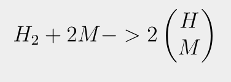
M은 표면의 금속원자를 나타낸다. 수소분자가 나뉘어 흡착되었다고 해서 해리흡착이라고 부른다. 메탄 등 탄화수소도 수소원자와 알킬기로 나뉘어져 금속원자에 해리흡착된다.
수소가 금속 산화물에 화학흡착될 때는 금속이온과 산소이온에 수소이온이 나뉘어서 흡착된다.
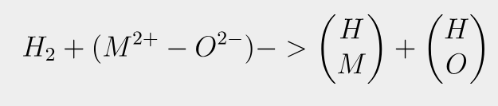
수소가 흡착된 금속 산화물을 가열하면 하이드록실기 두개가 결합하여 물로 탈착될 때, 산화물이 산소를 잃으면서 금속으로 환원된다.
또한 금속에 화합물이 공유결합의 형태로 화학흡착되기도 한다.